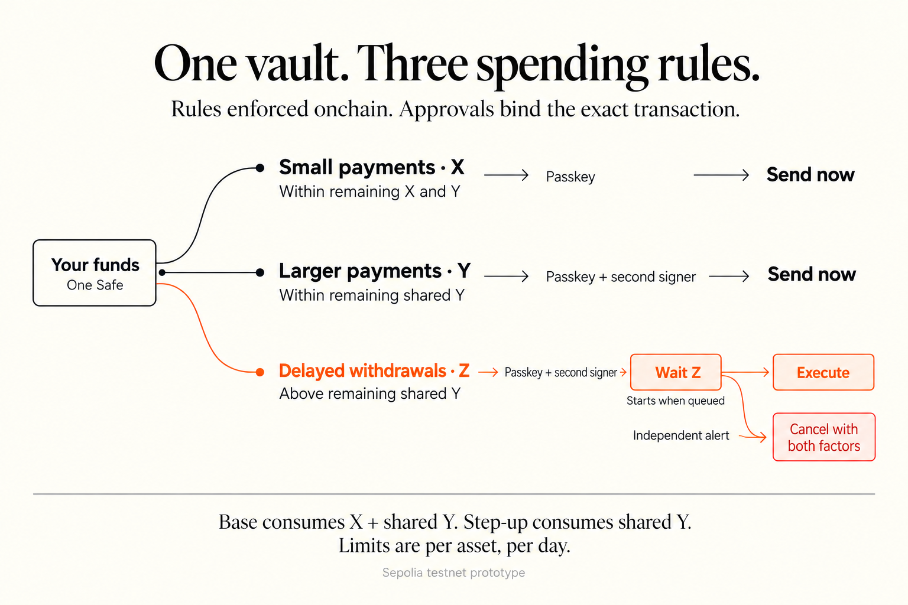

Building a self-custody vault with bounded spending
The problem
A valid signature can authorize a catastrophic transaction. Hardware wallets protect keys, and multisig distributes approval, but neither automatically limits how much an approved transaction can move.
I want routine payments to remain convenient while larger withdrawals require stronger authorization and time to intervene. Those restrictions must survive a compromised interface: enforcing them in the frontend would provide little protection.
How we’re fixing it
The vault holds assets in one Safe and enforces three tiers onchain:
- X: daily spending authorized by the primary passkey.
- Y: a shared daily ceiling for all immediate spending; step-up transactions require an additional signer.
- Z: a mandatory, cancellable delay for withdrawals exceeding the remaining immediate allowance.


Base transfers consume both X and Y. Step-up transfers consume Y, preventing an attacker from stacking two independent allowances. Approvals bind the chain, Safe, recipient, amount, calldata, operation, and nonce.
A policy guard constrains both owner and module execution. Zodiac Delay provides the queue. Unsupported calls are rejected, security-weakening changes are delayed, and independent notifications provide an opportunity to cancel.
Testing with AI agents on Sepolia
Agents implement adversarial tests, review changes, and exercise bounded transaction sequences against actual Sepolia deployments.
The tests check successful transfers alongside overspending, replay, altered signatures, cancellation, expiry, and counter rollback. Live execution additionally exposes RPC failures, competing funder transactions, confirmation delays, and interrupted submissions.
At the checkpoint, the scenario journal contained 15 successful live transactions. Two USDC payments demonstrated counters progressing from 10/10 to 10/20, confirming that base and step-up transfers share Y. Notification evidence includes delivery and receiver acknowledgement.
This automates substantial repetitive work: constructing transactions, running regressions, polling receipts, checking counters, and assembling evidence. My work concentrates on policy decisions, bounded authorization, and reviewing discrepancies. Human hours saved have not been measured; the concrete scale is 610 passing regular tests and four passing invariant tests, plus live-chain verification. Checkpoint
What’s next
The immediate gate is completing the remaining USDC, signer-rotation, cancellation, freeze, and notification scenarios. Two coverage failures and a pending fix review must also be resolved.
After that comes the planned client-only, sponsored ERC-4337 wallet. Its deployment, provider compatibility, browser signing, and recovery from interrupted submissions must preserve the same policy.
The intended outcome is a reproducible testnet vault with evidence that spending is bounded and larger withdrawals remain delayed and cancellable. Independent specialist review and a professional audit remain prerequisites for production.